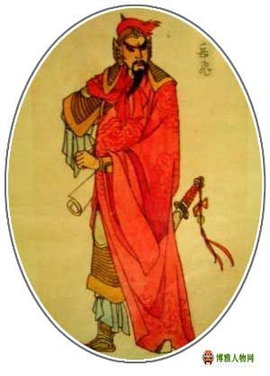
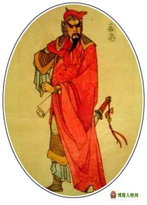
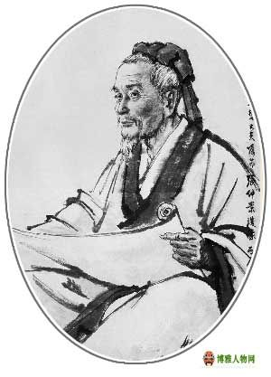
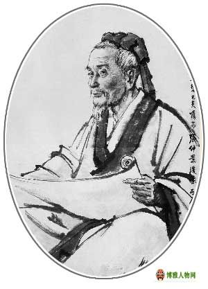
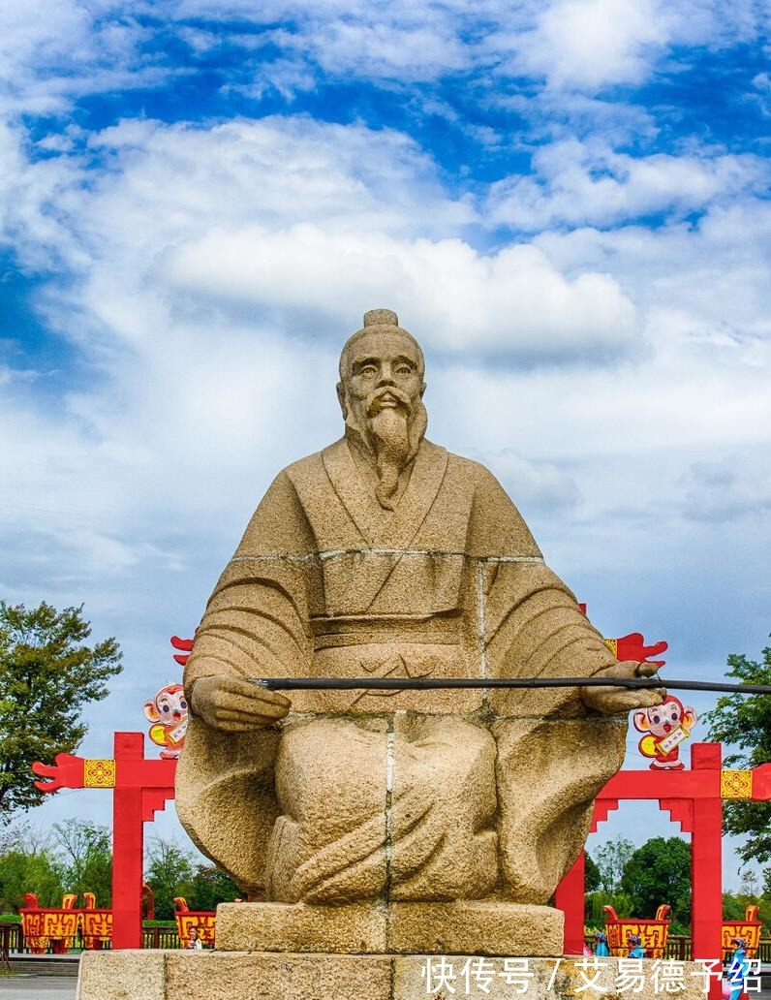
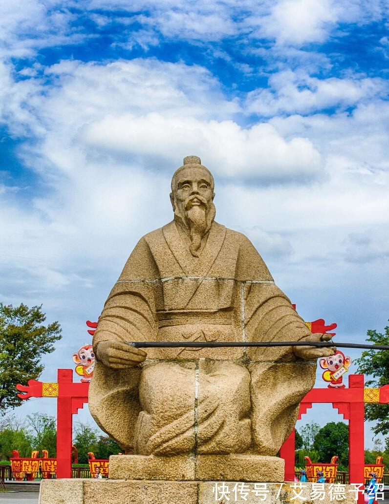

“精忠报国”--岳飞
 

“撼山易，撼岳家军难！”
岳飞是南宋名将。 当时，北方的金兵，常常攻打中原。母亲鼓励他报效国家，从军之前，母亲在他背上刺了“ 精忠报国 ”四个大字。岳飞不忘母训，那四个字成为岳飞终生遵奉的信条。岳飞每战必胜，立功无数，名闻大江南北。岳飞建立起一支纪律严明、作战英勇的抗金军队“岳家军”，岳家军遵守纪律，宁可忍住饥饿，不敢打扰人民。留下“ 冻死不拆屋，饿死不掳掠 ”的美名。百姓们为了感谢岳飞的功德，建了岳飞祠，并塑了他的像放在祠内，早晚礼拜。 “岳家军“让金军闻风丧胆。
“医圣”--张仲景
 

张仲景（约公元150～154年—约公元215～219年），名机，字仲景，是东汉南阳郡涅阳县（今河南邓州市）人，中国东汉伟大的医学家、世界医史伟人。张仲景广泛收集医方，写出了传世巨作《伤寒杂病论》，它确立的“辨证论治”原则，是中医临床的基本原则 ，是中医史上第一部理、法、方、药俱备的经典，是中医的灵魂所在，仲景因而被后世尊为“医圣”，有庙供奉香火。
“财神”--范蠡


忠以为国；智以保身；商以致富，成名天下。
范蠡，是春秋末期的大政治家，有文财神，商圣之称。范蠡堪称历史上弃政从商的鼻祖，同时也是开创个人致富记录的典范。他曾经“三致千金”三次散尽家财，又三次重新发家。范蠡因为善于致富而又乐于施财济众，所以被世人奉为财神！为了表示对他人格的仰慕，后来做生意的人就把他的像贴挂起来，以他为榜样。可是，随着时代的推移，慢慢的大家不知道陶朱公是谁了，只晓得他是财神，礼拜财神也不是为了学布施，而是想从他这里求发财。
“谋圣”--姜子牙
 

有道是“姜太公钓鱼，愿者上钩”。讲的就是一樵夫见姜子牙用直钩钓鱼，便授其钓鱼之法，但姜子牙却答道：“老夫名虽垂钓，意不在鱼。我宁在直中取，不向曲中求，不为锦鳞设，只钓王与侯。”姜子牙垂钓的故事传闻四方，周西伯姬昌便率领属臣带上厚礼，恭请姜子牙出山。
姜子牙先在商为官，见纣王无道，便辞官游说方国，听闻西伯姬昌贤能而去周，隐之磻溪，此时已年届七十。武王继位后，姜子牙拜为国师，牧野之战中立下首功，被封为齐国之侯。姜太公先后辅佐了文王、武王、成王、康王等四代周王，既主军，又问政，武能安邦、文能治国。周公分封后，姜太公成为齐国的缔造者、齐文化的创始人，所作《六韬》传世。